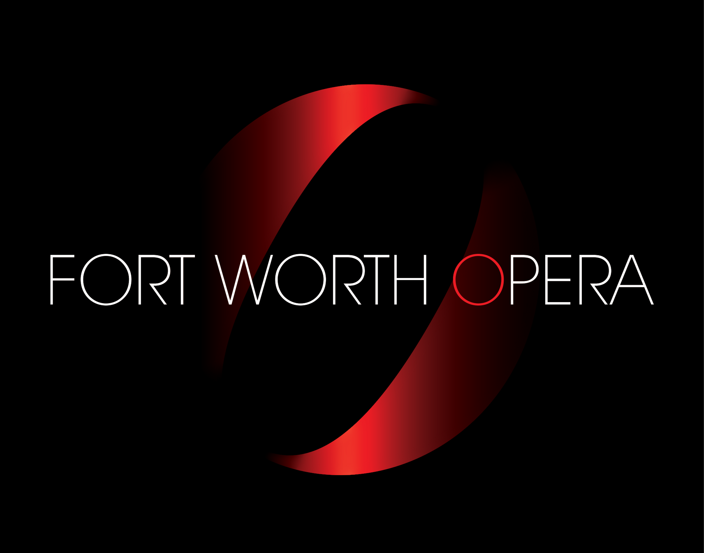

Welcome! My name is Stella Lenzie.
Featured Work
Fort Worth Opera
I worked for the Fort Worth Oprea during Spring 2025, directly under the Director of Marketing and Communications. While there, I assisted with Front of House Operations during a major prodiction, began implementing a Production Archive that dated back to the beginning of the organization, and designed the surveys in order to illicit the most beneficial audience response.
The Cliburn
I had the pleasure of working for the 17th International Van Cliburn Piano Competition, taking place in Fort Worth, Texas, during the summer of 2025. While there, I served as the Head of Digital Media Sales, as well as serving a crucial audience-facing role during all performances of the competition. After the conclusion of the competition, I was able to analyze the audience data and determine whether the marketing strategies had particular successes or shortcomings.
This is a link to TCU's page featuring the specific page where my work has been showcased.
Current Learning
I am a three-time TCU Scholar and four-time member of the Dean's List, working toward finishing my BA degree in May of 2026. I'm currently enrolled in two concurrent coding classes, where I'm building the fundamentals of HTML and Python simultaneously. I hope to be able to utilize this knowledge for a personal project at the end of the semester. In addition to these technical courses, I am also taking Musical Theatre History, wherein I look forward to learning specifically about that particular area of impactful theatre.
Contact Me!
Cell Phone: 1(310)-926-3160
Email: stella.lenzie@gmail.com or stella.lenzie@tcu.edu
Social Media: @stella.lenzie on all platforms
Add me on LinkedIn!